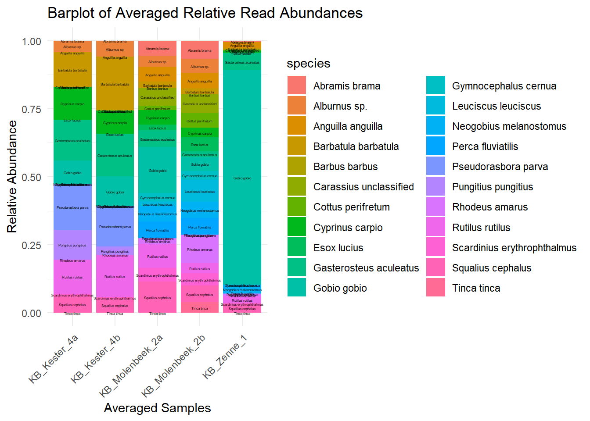
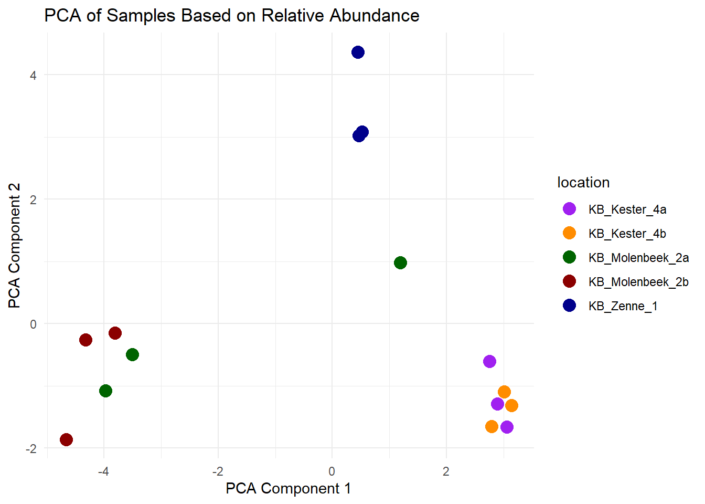
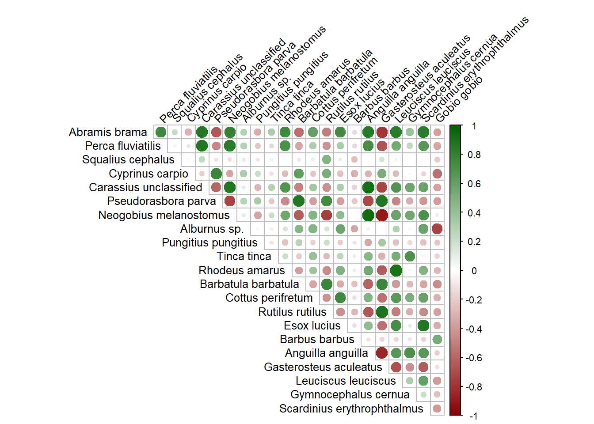

8 Resultaten eDNA vissen
## here() starts at C:/Users/charlotte_vandriessc/Documents/GitHub/ehs_kesterbeek_2024## Loading required package: permute## Loading required package: lattice## corrplot 0.95 loaded# Inlezen van de txt-bestanden
edna_rra_avg <- read.delim(
here("data","biotiek","vis","elektrisch","extern","ruw","AquatischBeheerCuratedAveragedRRA_Hellinger.txt"),
sep = "\t",
header = TRUE,
stringsAsFactors = FALSE,
dec = "."
)
edna_rra <- read.delim(
here("data","biotiek","vis","elektrisch","extern","ruw","AquatischBeheerCuratedRRA_Hellinger.txt"),
sep = "\t",
header = TRUE,
stringsAsFactors = FALSE,
dec = "."
)# Zet de dataset om naar numeriek
edna_rra_avg <- edna_rra_avg %>%
mutate(across(
.cols = -species,
.fns = ~ as.numeric(gsub(",", ".", .))
))
df_plot <- edna_rra_avg %>%
pivot_longer(
cols = -species,
names_to = "averaged_sample",
values_to = "relative_abundance"
)
# Labels aanpassen op X as voor visualisatie
df_plot$averaged_sample <- str_replace_all(df_plot$averaged_sample,
c(
"averaged_E2024STF1009PC_KB_Zenne1_Aquatisch.Beheer_1" = "KB_Zenne_1",
"averaged_E2024STF992PC_KB_Molenbeek2a_Aquatisch.Beheer_1" = "KB_Molenbeek_2a",
"averaged_E2024STF1010PC_KB_Molenbeek2b_Aquatisch.Beheer_1" = "KB_Molenbeek_2b",
"averaged_E2024STF994PC_Kester4a_Aquatisch.Beheer_1" = "KB_Kester_4a",
"averaged_E2024STF995PC_Kester4b_Aquatisch.Beheer_1" = "KB_Kester_4b"
))
# plot relative abundance of species per sample
ggplot(df_plot, aes(x = averaged_sample, y = relative_abundance, fill = species)) +
geom_bar(stat = "identity") +
geom_text(aes(label = species),
position = position_stack(vjust = 0.5),
size = 1, color = "black") +
theme_minimal() +
labs(
x = "Averaged Samples",
y = "Relative Abundance",
title = "Barplot of Averaged Relative Read Abundances"
) +
theme(axis.text.x = element_text(angle = 45, hjust = 1)) 
#verdere data visualisatie
edna_rra_samples <- edna_rra %>%
select(9:23) %>%
mutate(across(everything(), ~ as.numeric(gsub(",", ".", .))))
edna_rra_samples[is.na(edna_rra_samples)] <- 0
edna_rra_samples_transposed <- t(edna_rra_samples)
# -------- PCA --------
pca_result <- prcomp(edna_rra_samples_transposed, scale = TRUE)
pca_scores <- as.data.frame(pca_result$x)
pca_scores$sample <- rownames(pca_scores)
location_map <- c(
"E2024STF1009PC_KB_Zenne1_Aquatisch.Beheer_1" = "KB_Zenne_1",
"E2024STF1009PC_KB_Zenne1_Aquatisch.Beheer_2" = "KB_Zenne_1",
"E2024STF1009PC_KB_Zenne1_Aquatisch.Beheer_3" = "KB_Zenne_1",
"E2024STF992PC_KB_Molenbeek2a_Aquatisch.Beheer_1" = "KB_Molenbeek_2a",
"E2024STF992PC_KB_Molenbeek2a_Aquatisch.Beheer_2" = "KB_Molenbeek_2a",
"E2024STF992PC_KB_Molenbeek2a_Aquatisch.Beheer_3" = "KB_Molenbeek_2a",
"E2024STF1010PC_KB_Molenbeek2b_Aquatisch.Beheer_1" = "KB_Molenbeek_2b",
"E2024STF1010PC_Molenbeek2b_Aquatisch.Beheer_2" = "KB_Molenbeek_2b",
"E2024STF1010PC_Molenbeek2b_Aquatisch.Beheer_3" = "KB_Molenbeek_2b",
"E2024STF994PC_Kester4a_Aquatisch.Beheer_1" = "KB_Kester_4a",
"E2024STF994PC_Kester4a_Aquatisch.Beheer_2" = "KB_Kester_4a",
"E2024STF994PC_Kester4a_Aquatisch.Beheer_3" = "KB_Kester_4a",
"E2024STF995PC_Kester4b_Aquatisch.Beheer_1" = "KB_Kester_4b",
"E2024STF995PC_Kester4b_Aquatisch.Beheer_2" = "KB_Kester_4b",
"E2024STF995PC_Kester4b_Aquatisch.Beheer_3" = "KB_Kester_4b"
)
pca_scores$location <- location_map[pca_scores$sample]
ggplot(pca_scores, aes(x = PC1, y = PC2, label = sample, color = location)) +
geom_point(size = 4) +
theme_minimal() +
labs(
x = "PCA Component 1",
y = "PCA Component 2",
title = "PCA of Samples Based on Relative Abundance"
) +
scale_color_manual(values = c(
"KB_Zenne_1" = "darkblue",
"KB_Molenbeek_2a" = "darkgreen",
"KB_Molenbeek_2b" = "darkred",
"KB_Kester_4a" = "purple",
"KB_Kester_4b" = "darkorange"
)) 
# -------- Correlatieplot --------
species_names <- c(
"Abramis brama", "Perca fluviatilis", "Squalius cephalus", "Cyprinus carpio",
"Carassius unclassified", "Pseudorasbora parva", "Neogobius melanostomus",
"Alburnus sp.", "Pungitius pungitius", "Tinca tinca", "Rhodeus amarus",
"Barbatula barbatula", "Cottus perifretum", "Rutilus rutilus", "Esox lucius",
"Barbus barbus", "Anguilla anguilla", "Gasterosteus aculeatus", "Leuciscus leuciscus",
"Gymnocephalus cernua", "Scardinius erythrophthalmus", "Gobio gobio"
)
colnames(edna_rra_samples_transposed) <- species_names
cor_matrix <- cor(edna_rra_samples_transposed)
corrplot(cor_matrix,
method = "circle",
type = "upper",
addCoef.col = NULL,
number.cex = 0.7,
cl.cex = 0.7,
tl.col = "black",
tl.srt = 45,
tl.cex = 0.8,
col = colorRampPalette(c("darkred", "white", "darkgreen"))(200),
cl.pos = "r",
cl.lim = c(-1, 1),
diag = FALSE,
mar = c(0,0,1,0)) ## Warning in text.default(pos.xlabel[, 1], pos.xlabel[, 2], newcolnames, srt =
## tl.srt, : "cl.lim" is not a graphical parameter## Warning in text.default(pos.ylabel[, 1], pos.ylabel[, 2], newrownames, col =
## tl.col, : "cl.lim" is not a graphical parameter## Warning in title(title, ...): "cl.lim" is not a graphical parameter
 Bruneel, S. & Van Driessche, C. (). !!! missing DOI !!!
Bruneel, S. & Van Driessche, C. (). !!! missing DOI !!!